This is the result of me getting an iPad Pro and being bored over winter break. I hope you enjoy~
Make New Friends, but Keep the Old
Here are some Facebook related facts and figures. I tried to use the Facebook API to get this information, but all the endpoints were dead ends because of privacy issues (even though I only wanted to find and use my own data...) So instead, I grabbed them using a script that runs over my personal activity log and graphed them using Chart.js. The last graph is based on interactions through comments, likes, and reactions.
Friends Made Per Month
Shoutout to all the friends I made in June and July!
How I React to Content on Facebook
I'm full of likes and loves.
Who I Interact With the Most
What a surprise: I like wholesome memes and Christine Betts.
Reacts All Around
2017 was a rollercoaster. Here are some emotions I felt over this year (click through to see a breakdown):
Oh, So You Like "Doing Things?" Name Five of Their Songs
Life moves pretty fast. If you don’t stop and look around once in awhile, you could miss it. Hover over each Olga for more details!
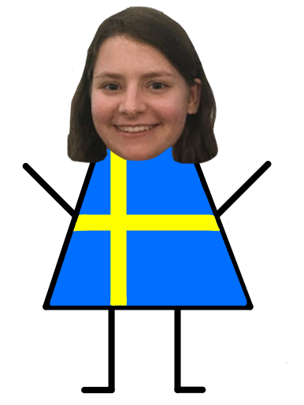 Visited my sister in Sweden with my bud, Alyssa. Ate meatballs and saw a lot of art. Didn't get to go to IKEA. Not salty.
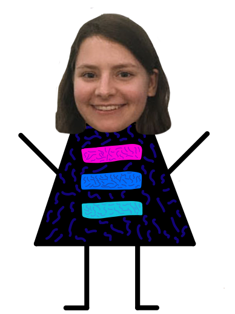 Rocked out at the Two Door Cinema Club concert. Amazing band. Listen to albums 1 and 2 (only listen to 3 if you have time)
Swam in the UW fountain after it was cleaned. Injured my toe so badly it didn't heal until September.
Started my Facebook University internship in Menlo Park! Good vibes, good work, and good eats.
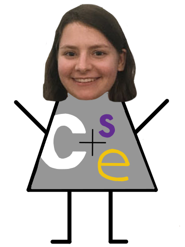 Got into the CSE program at UW. Said a prayer to the CSE intro series god, Stuart Reges.
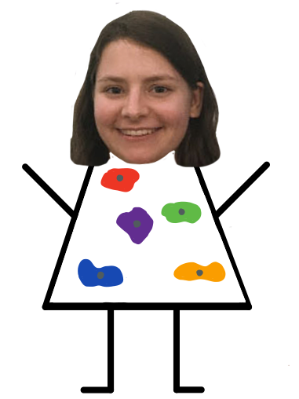 Learned how to top rope. Fear of heights? No sir.
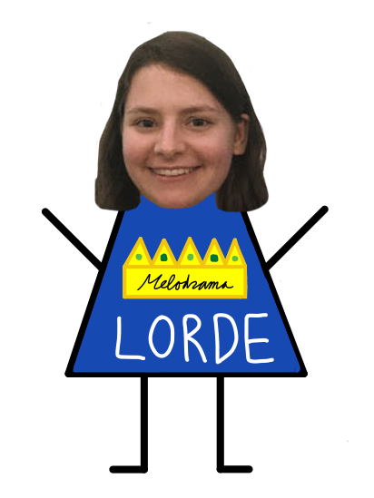 Lorde blessed me during her show at Bumbershoot. Felt reborn.
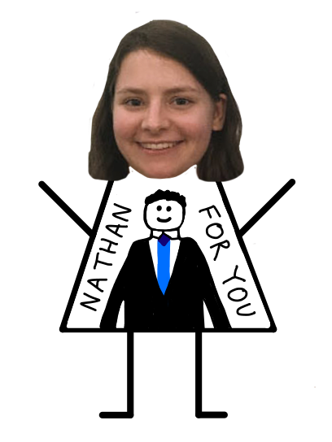 Met Nathan Fielder from hit show, "Nathan For You." Go watch. 10/10 funny business proposals.
Visited my bud, Nicole, in Cal Poly SLO during the heat of the summer. Hiked and ate tri-tip sandwiches. Would agree with Oprah and rate it “happiest city in America.”
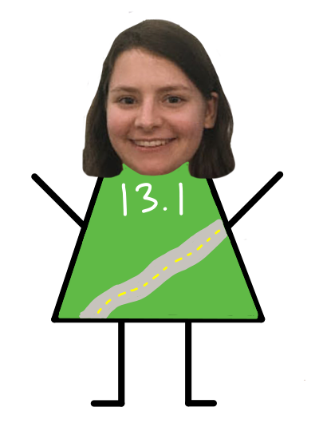 Ran first half-marathon- "Beat the Blerg." Ate cake during the run.
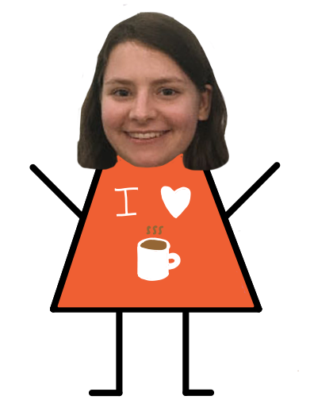 Became a CSE 142 TA. Loved all my students. Probably tried too hard to be relatable. Said "thank you for being a student" to one during my last section.
Went to the Grace Hopper Celebration. Thank you to the TUNE House team and all the donors!
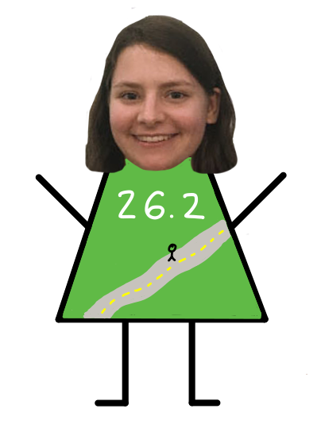 Decided a half wasn't enough. Ran a full marathon with my bud, Christine. Took us 6 hours. We cried. (But we finished.)
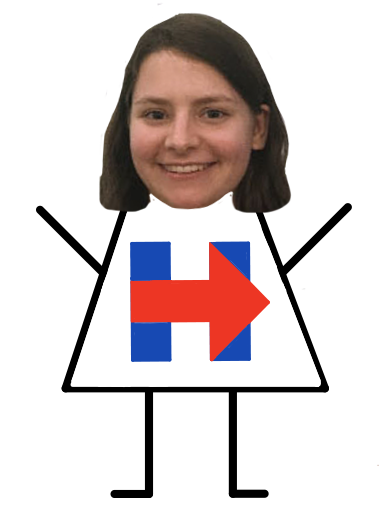 Met Hillary Rodham Clinton. Shook her hand. Said thank you.
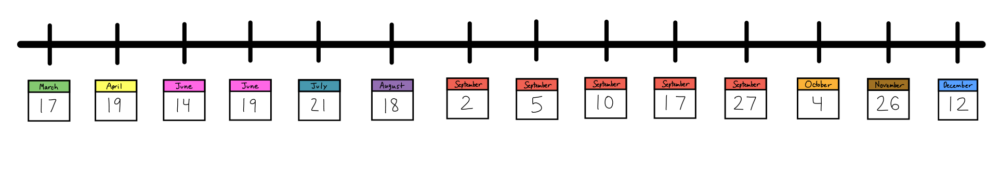
You Win Some, You Lose... a Lot
You're not doing life correctly if you're not failing from time to time. Here lie the repressed memories of my failures:
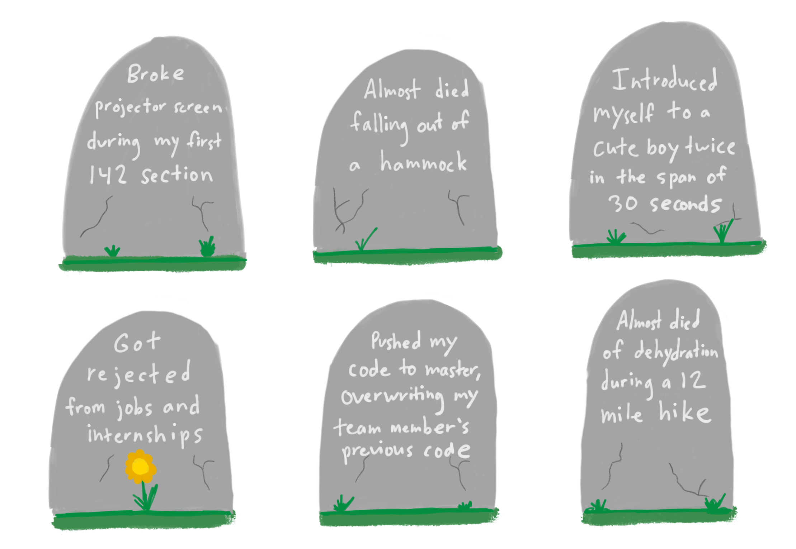
Now Let's Jam!
I listen to some music here and there. The first playlist is my top songs of 2017, and the second playlist is the one that I listened to while making this website. I got the stats from here!